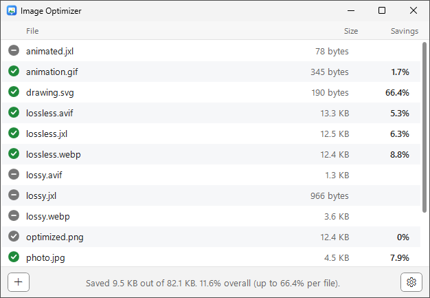
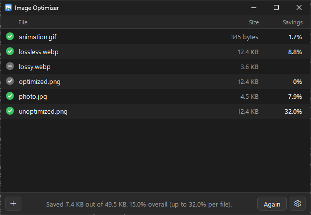

Features
- Drag and drop Drop files or whole folders onto the window. Each file is optimized and replaced in place.
- Lossless and safe A result is only kept if it's strictly smaller and pixel-identical to the original. Otherwise the original is left untouched.
- Seven formats AVIF, GIF, JPEG, JPEG XL, PNG, SVG and WebP.
- Nothing to configure The defaults are safe, and a small Settings panel is there if you want it.
- File Explorer integration Right-click images or folders and choose Optimize with Image Optimizer.
- Keeps what matters Metadata is removed, but color profiles and JPEG orientation are always kept so images look exactly the same.
- Light, dark and High Contrast Follows your Windows app mode and contrast theme automatically.
- Automatic updates New releases download quietly in the background and install on your next launch.
Supported formats
| Format | Tool | What it does |
|---|---|---|
| AVIF | libavif | Lossless AVIFs are re-encoded losslessly at a higher effort. Lossy AVIFs are left untouched. |
| GIF | Gifsicle | Lossless frame and LZW optimization. |
| JPEG | libjpeg-turbo | Optimized Huffman tables and progressive encoding, without touching the image data. |
| JPEG XL | libjxl | Lossless JPEG XLs are re-encoded at a higher effort, and recompressed JPEGs still turn back into the exact original JPEG. |
| PNG | oxipng | Lossless filter, bit depth, palette and deflate optimization. |
| SVG | SVGO | SVGO's default preset, built in. No Node.js needed. |
| WebP | libwebp | Lossless WebPs are re-encoded losslessly. Lossy WebPs are only stripped of metadata. |